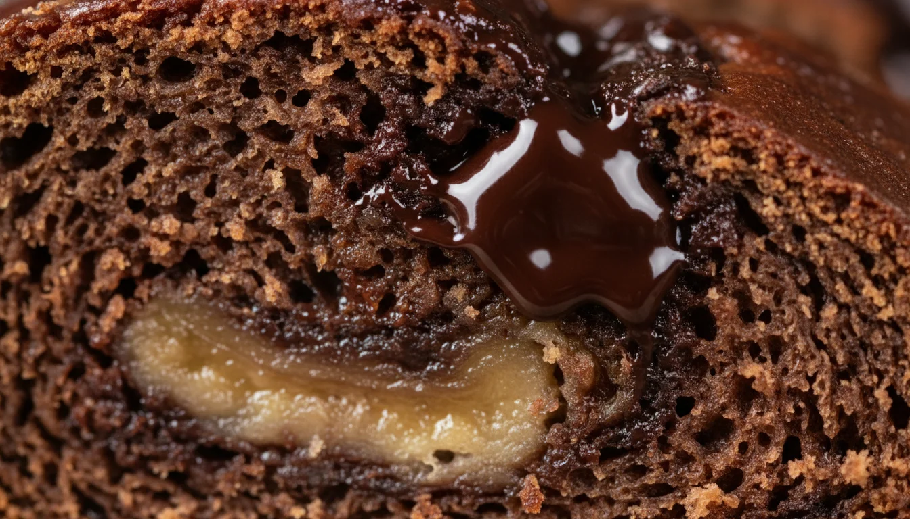

Double Chocolate Chip Banana Bread

Experience the ultimate moist, fudgy double chocolate chip banana bread. A culinary scientist's guide to rich cocoa flavor and perfect crumb structure.
There is a specific moment in the lifecycle of a banana that usually signals the end, but for a culinary scientist, it signals the beginning of something magnificent. I’m talking about the stage past “spotted”—when the skin is nearly black and the fruit inside has fermented slightly into a sweet, aromatic custard. This is where we find the foundation for the ultimate Double Chocolate Chip Banana Bread.
This isn’t just a way to save produce; it is a study in richness. We aren’t simply adding cocoa to a standard recipe. We are re-engineering the hydration and fat ratios to support the drying nature of cocoa powder, ensuring the result is not a dry sponge, but a loaf that borders on the texture of a fudge brownie while retaining the comforting crumb of a quick bread.
The Physics of Fudginess: Crumb Structure Analysis
To achieve a loaf that is dark, dense, and moist, we have to understand the competition for water within the batter. Cocoa powder is incredibly hygroscopic—it loves to absorb moisture. If you take a standard banana bread recipe and simply add cocoa, you will end up with a choking hazard.

To counteract this, we rely on the pectin content in the bananas and the invert sugars created as the fruit ripens. By using bananas that are heavily oxidized, we maximize the fructose content. Fructose is more hygroscopic than sucrose (granulated sugar), meaning it holds onto water molecules during the baking process.
Furthermore, we balance the fat. Butter provides flavor, but it contains water and milk solids. By melting the butter and mixing it with the cocoa and sugar first, we coat the flour proteins, inhibiting gluten formation. This technique—similar to the “creaming method” but adapted for liquid fats—ensures the crumb remains tender rather than chewy. The result is a structure that supports the weight of melting chocolate chips without collapsing.
The Cocoa-Banana Compound: Ingredient Selection
The difference between a good loaf and a world-class one usually comes down to three specific ingredient choices.
- Dutch-Process Cocoa Powder: Unlike natural cocoa, which is acidic and light, Dutch-process is treated with an alkalizing agent. This neutralizes the acid, darkening the color and smoothing out harsh notes. It gives the bread that deep, Oreo-like darkness. Because bananas are naturally acidic (pH 4.5-5.2), we don’t need the acidity of natural cocoa to activate the baking soda.
- Brown Sugar Dominance: We use a higher ratio of brown sugar to white. The molasses in brown sugar adds moisture and acidity, reacting with the baking soda to create carbon dioxide bubbles, which lift the heavy batter.
- The Chocolate Chip Variance: I recommend using semi-sweet or dark chocolate chips (60% cacao or higher). The banana batter is inherently very sweet; using milk chocolate chips can make the loaf cloying. Dark chocolate provides a necessary bitterness to cut through the sugar.
Diagnosing the Loaf: A Baker’s Matrix
Even with the best chemistry, variables like humidity and oven calibration can affect the outcome. Here is a troubleshooting guide to navigate common issues.
| Issue | Root Cause | The Fix |
|---|---|---|
| Gummy / Wet Bottom | Excess liquid from bananas or under-baking. | Weigh your bananas (350g peeled is ideal). If using frozen, drain the liquid. Cover the top with foil and bake 10 mins longer. |
| Dry / Crumbly Texture | Too much flour or cocoa packed into the cup. | Always spoon and level your flour and cocoa, or better yet, use a scale. Cocoa acts like flour—too much dries it out instantly. |
| Sunken Center | Opened oven too early or over-leavening. | Do not open the oven door before the 45-minute mark. The rush of cool air collapses the unstable structure before it sets. |
| Burnt Edges, Raw Middle | Oven temperature too high or dark pan usage. | Dark metal pans conduct heat faster. Reduce oven temp by 25°F if using a dark pan, or tent the loaf with foil halfway through. |
Laboratory Protocols for the Perfect Slice
Over the years in the test kitchen, I’ve developed a few “non-negotiable” protocols that elevate this recipe from home-baking to bakery-quality.
1. The Cocoa Bloom: While the recipe calls for mixing dry ingredients, a pro move is to whisk the hot melted butter directly with the cocoa powder before adding anything else. This “blooms” the cocoa, releasing essential oils and intensifying the chocolate flavor, similar to tempering spices in Indian cooking.
2. The Banana Weigh-In: “3 bananas” is a terrible unit of measurement. Bananas vary wildly in size. For consistent results, aim for 340g to 360g of peeled, mashed banana. Too little leads to dryness; too much leads to a pudding-like center.

3. The Parchment Sling: Never grease and flour a loaf pan for this recipe. The high sugar content makes it prone to sticking. Create a “sling” with parchment paper that overhangs the long sides of the pan. This allows you to lift the entire loaf out cleanly without inversion, preserving the chocolate chips on top.
4. The Retrogradation Wait: This is the hardest rule to follow. Do not slice the bread while it is hot. When hot, the starches are gelatinized and the structure is fragile. Slicing it releases steam (moisture) and gums up the crumb. Wait until it is completely cool—or better yet, wrap it and wait 24 hours. The flavor compounds migrate and deepen the next day.
5. The Salt Finish: Just before putting the loaf in the oven, sprinkle flaky sea salt (like Maldon) down the center line. This salt crunch contrasts beautifully with the soft crumb and sweet chocolate, triggering the tongue’s salt receptors and making the chocolate taste more “chocolatey.”
Double Chocolate Chip Banana Bread
Ingredients
Instructions
- The Emulsion Phase: Preheat your oven to 350°F (175°C). In a large mixing bowl, whisk the melted butter and sugars vigorously until the mixture resembles wet sand. Add the mashed bananas, egg, and vanilla, whisking until fully emulsified.
- Dry Integration: Sift the flour, Dutch-process cocoa powder, baking soda, and salt directly over the wet ingredients. This aeration step is crucial for preventing cocoa lumps. Fold gently using a silicone spatula.
- The Chocolate Fold: Stop folding just before the flour streaks disappear. Add the chocolate chips and finish folding just until combined. Do not overmix, or gluten development will toughen the loaf.
- Baking & Setting: Pour batter into a lined 9x5 inch loaf pan. Bake for 55-65 minutes. A toothpick should come out with moist crumbs (not wet batter). Cool in the pan for 15 minutes before transferring to a wire rack.
Nutrition
Calories: 345 kcal | Protein: 5g | Fat: 16g | Sugar: 28g